Open the translation workbench, log-in as refset manager (peter refm in the testing bundle) and select the Refset Spec tab:
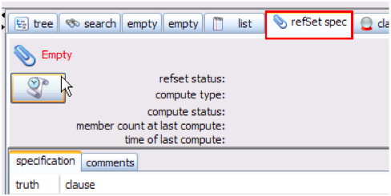
- Press the "refset creation request" button:
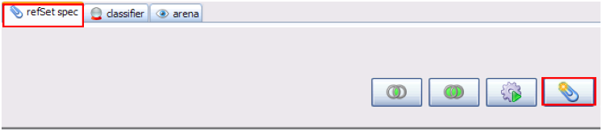
- A new window is opened requesting for a RefSet name, a RefSet parent, and a deadline. When these mandatory data are completed, click on ">" button:
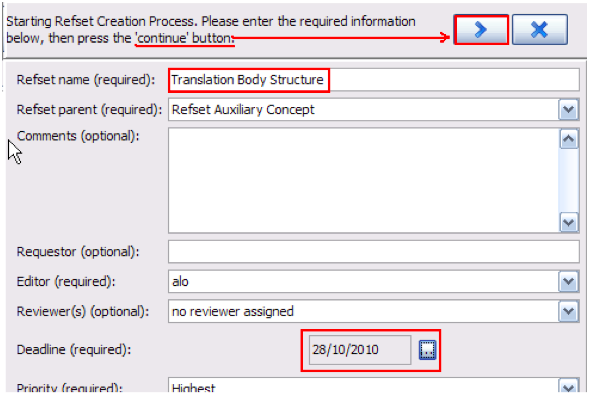
- The Refset parent allows a better organization and visualization of created refsets for further use. The list of refset parents depends on the permissions setup in the project, so it may be different for different users. In this example, the refset created will be displayed in the Taxonomy view under the parent concept “Refset”:

- The following window will be displayed. However, you should ignore it, as it is related to the refset creation and validation workflow and is not in the scope of this guide. Just click OK:
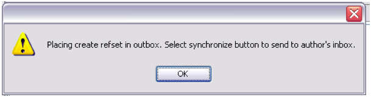
- The refset name you have entered is displayed on the right pane. Now you should populate it with the refset members. As guidance, the member count at the last compute is shown, as well as the time of last compute. In the example shown, the member count is still 0 because the refset is still empty:
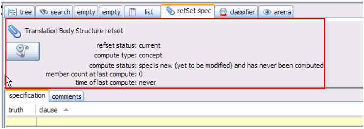
Populate your Refset
- In the RefSet spec tab, click the button. Logical “OR” clause will be displayed in the Specification tab. Click on “OR” clause to select it.
- Go to the “TAXONOMY” tab on the left panel and select the SNOMED concepts that will constitute your refset:
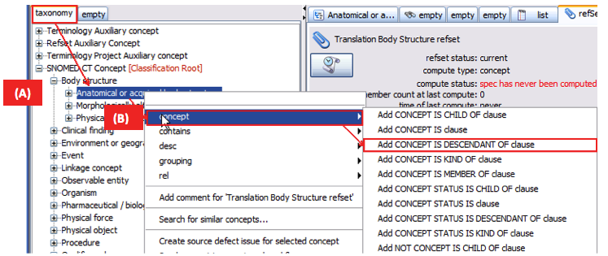
(A) Right click on the selected concept. A new window is displayed.
(B) Select “concept” to open the clauses window, where you can choose from a spectrum of clauses according to the definition used for creating your refset. In this case, we selected “ADD CONCEPT IS DESCENDANT OF” clause in order to create a refset that will include all the descendants of “Body structure."
If you select “add CONCEPT IS” clause, only the concept “Body structure” will be added to your refset. Likewise, if you select “add CONCEPT IS CHILD OF” clause (not shown in the figure), only the children of “Body structure” will be added.
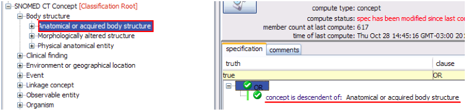
The selected clause is displayed on the right panel.
- Click “Commit” to save your selection and then, the button to compute your refset.
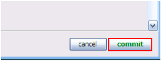
- A message appears when your refset has been computed:
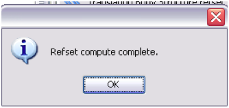
- The refset members are displayed upon clicking “Members” tab on the lower right panel:
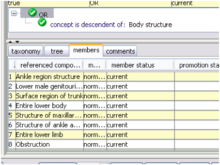
- Each refset member is represented in a row. The number of rows will indicate the number of refset members. (This functionality is provided by the workbench and is not part of the translation module.)
- Any number of OR clauses may be added and they will displayed in a tree view on the right:
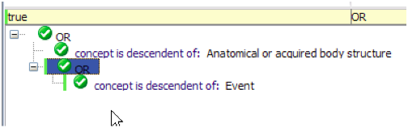
- Right clicking on a clause may display a Retire option before commiting the refset.
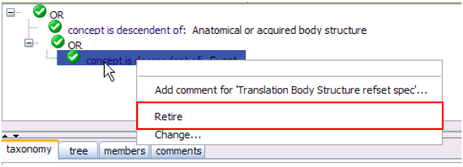
- The changes are reflected in the refset specifications window:
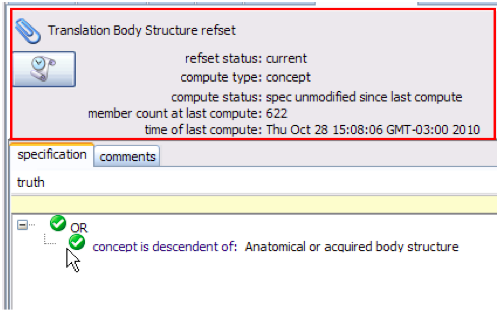